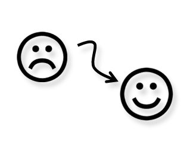
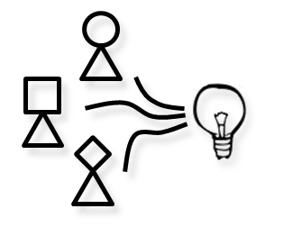

I am interested in human-computer interactions and machine learning applied to engineering and art design.
My
dissertation focused on eliciting user preferences through interactions.
My current research focuses on developing tailored learning algorithms for various
engineering and design applications.
Current Research
|  |
Design Preference Elicitation
"What kind of cars do you like?" The answer lies in the rich interaction data from human and computers. |
|
Structured Design Representation
Structured representation has been used in evolutionary computation, which has the strength of exploration but lacks the ability of learning. Can machine learning on structured data be applied to enhance the evolution? |
|  |
Crowdsourcing for Design Solutions
Designs can be proposed and evaluated by a crowd. But what are the game rules in crowdsourcing for a design solution? |